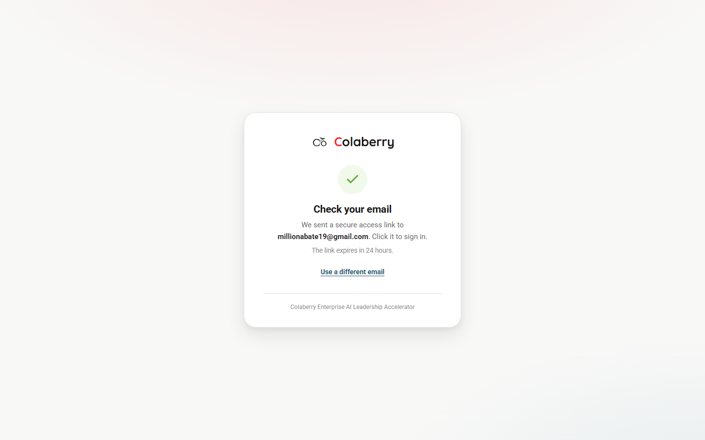

CC-20260729-w4t8 · enterprise.colaberry.ai · 2026-07-29 evening through 2026-07-30 early morningEvery cohort was being filtered out of the public /enroll picker once the July cohort started (a client-side "must start in the future" filter, four copies of it). Fixed by a concurrent session, confirmed live by this one.
markEnrollmentPaid set payment_status='paid' on a confirmed PaySimple webhook but never flipped portal_enabled, and login gates strictly on that flag. Fixed, deployed (PR #771).
Mohsin Ali, Abirahim Nur, Liza Ayele, Britiana Okoduwa, Regina Asafor — verified against PaySimple order-confirmation emails (not just forwarded receipts), payment_status/portal_enabled/cohort_id corrected for each.
Per your direction: removed the payment section and "Proceed to Payment" button entirely; visitors now get a free account immediately (same pattern as training.colaberry.com), matched to your reference confirmation screenshot. Verified live end-to-end.
Sonya Parker's credit complaint took two wrong hypotheses before the real cause surfaced: requestMagicLink picked which of a student's enrollment rows to log them into using ORDER BY created_at DESC with no other tiebreaker. A newer, duplicate 'explorer' row (auto-created by the 2026-07-24 Open House batch) was silently winning over her older, real, credit-bearing 'standard' row — routing her own login into the wrong account.
Swept the whole database for the same pattern and found it also silently affecting Mohsin Ali (already told "you're fixed" earlier the same night — he was not) and Menna Gashaw (not in any original complaint at all). Fixed all three accounts directly, then shipped a real code fix so it can't recur: pickBestEnrollment() in participantService.ts, PR #780, merged and deployed. Post-fix collision sweep across the entire table: 0 remaining collisions.
A post-deploy audit simulating the exact query requestMagicLink uses (not just eyeballing payment_status/portal_enabled in isolation) found three students whose confirmation/retry emails had already gone out, but who would still have failed to log in:
| Student | What was wrong | Fix applied |
|---|---|---|
| Marione Nkerbu | Real seat had portal_enabled=false; her only enabled row used a different email address than the one the confirmation went to | portal_enabled=true on her real seat |
| Jude Mofunanya | Real seat had portal_enabled=false; would have logged in fine but landed in his free Explorer account, not his real seat | portal_enabled=true on his real seat |
| Million Abate | His only enrollment row had status='withdrawn' (not just portal_enabled=false) and was tagged to the wrong cohort. Login would have returned a fake-success "check your email" message with no email actually sent — worse than a rejection, and directly contradicting his own email, which incorrectly said he already had access. | Reinstated: status='active', portal_enabled=true, cohort_id corrected to Cohort - July 2026 |
Confirmed no automated job would silently re-withdraw Million's record before reinstating it. Re-ran the exact-query simulation for all 13 students touched tonight afterward: 13 / 13 resolve correctly. Live end-to-end proof for Million below.

Verified Ram already has real admin access on both systems that matter (admin_users.role='admin' since April, and the staff-bridge mgmt_role='admin') — your assumption was correct, nothing to fix for him. His daughter Tanmayi was sitting in the free Explorer cohort; moved to the real Cohort - July 2026, confirmed paid and portal-enabled.
Flagged as a follow-up earlier tonight, now closed: the demo cohort's cohort_type was miscategorized so it slipped past the allowlist. Fixed by marking it closed, same as the other internal-only cohorts.
All 10 queued emails sent from ali@colaberry.com, BCC'd to you, threaded as replies on the original complaint emails. Verified via Gmail search: all 10 show the SENT label, zero bounce or delivery-failure notifications against any of the 10 recipient addresses in the following 24 hours. (The one bounce found in that window was an unrelated internal send to your own Hotmail, not a student.)
Found workstream/qr-checkin-login-fix (commit 1ee2e98e, dated 2026-07-27, three days before tonight's session, not part of tonight's work). It targets a real, still-present bug this session independently confirmed on current main: createAdminEnrollment defaults portal_enabled: false — the same class of "enrolled but can't log in" bug hand-fixed for Marione/Jude/Million above, but reachable via the admin-enrollment path instead of the public-enroll/Open House paths.
Deliberately not merged or taken over tonight — three-day-old, unfamiliar, unreviewed work isn't something to adopt blind at 4am, and Cluster C (QR check-in) itself was never independently diagnosed by this session. Please review that branch and either merge it or ask for a fresh follow-up PR.
Cohort - July 2026 is at 49 / 50 seats (by max_seats/seats_taken). Five of tonight's touched students (Marione, Jude, Million, Sonya, Menna) are enrolled there with payment_status='pending' and don't count against that number yet — seats only increment at confirmed payment. Worth a glance if several convert around the same time.
Ram's own paid enrollment row is still tagged to the "Explorer — Prospects" cohort rather than his dedicated "Ram — Business" cohort. Doesn't affect his real access (he operates through the admin panel), just noted in case it ever surfaces somewhere student-facing.